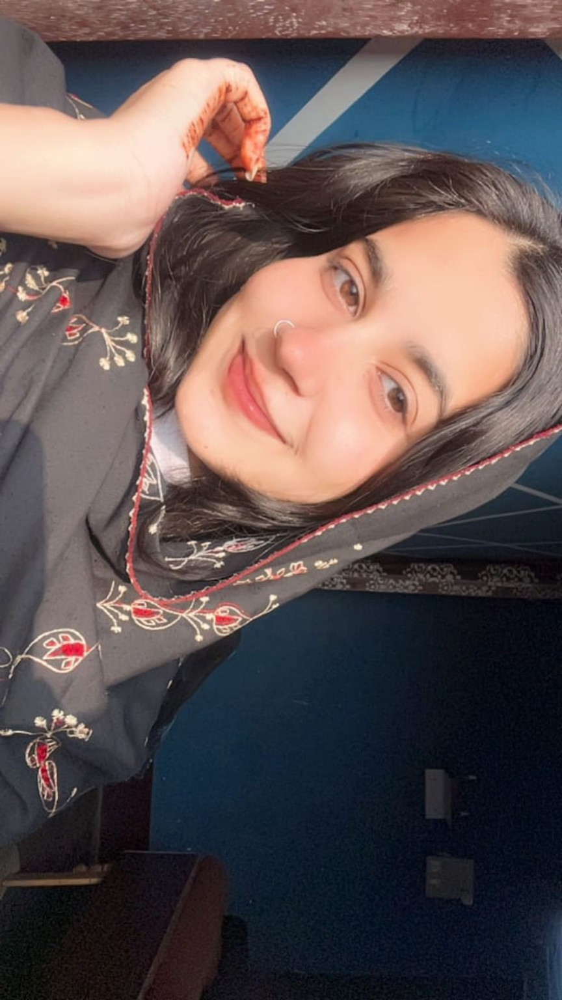
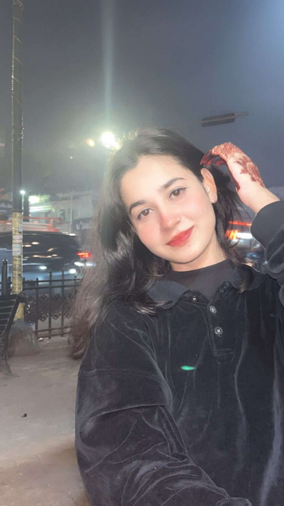
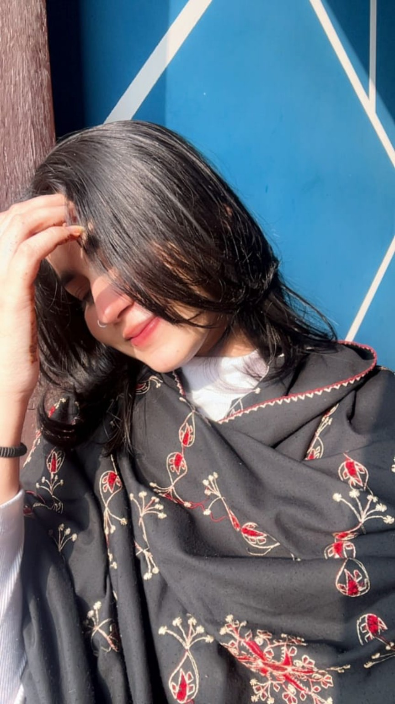
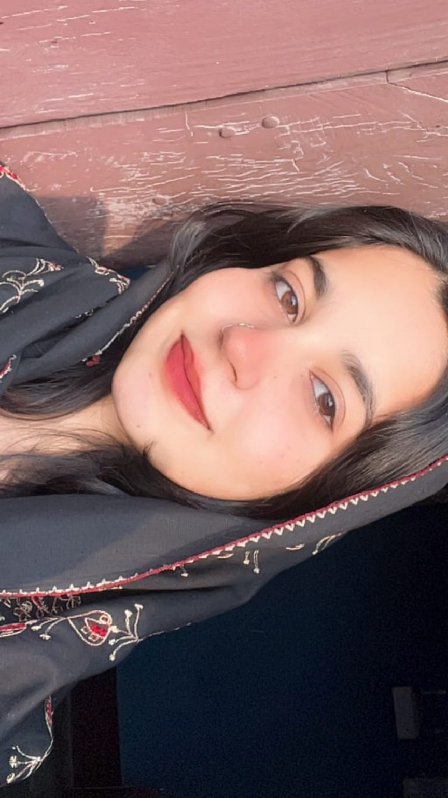
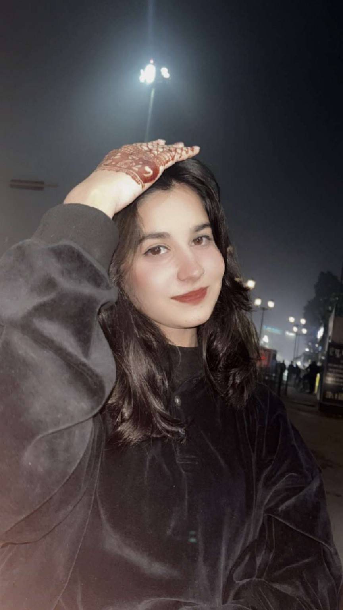

The beginning
Sixth class. One first look. One nervous confession. A tiny beginning that became this.
30 · AUGUST · 2026
A little birthday universe made just for Anam.
Turn your sound on.I was just in sixth class when I first saw you. I didn't know then that a simple school-day feeling would quietly become eight years of memories, laughter, misunderstandings, patience, and a love that kept choosing to stay.
I still remember gathering the courage to tell you that I liked you. You took a little time, and those one or two days felt strangely long. Then you came back with the words I had been hoping for — that you felt the same. And just like that, something small became something that would matter to me for years.
Our journey was never perfectly easy. There were moments when things around us didn't make it simple for us to be together. There were disagreements, fear, and times when we had to fight for what we believed our relationship was worth. But through all of it, we kept finding our way back to each other.
Maybe that's what makes these eight years beautiful. Not that everything was perfect — but that after every difficult chapter, there was still an “us.”
I love your innocent, childlike side, your laugh, and the calm, sensible way you handle things. Even our little jealous moments, possessiveness and care became memories only we can truly understand.
On your birthday, I don't want to promise a perfect life. I want to promise something real: I will keep showing up, caring, respecting you, supporting your dreams, and choosing you through ordinary days as much as extraordinary ones.
May you always have reasons to smile. May your dreams find their way to you. And whenever life feels heavy, I hope you remember there is someone who wants to see you happy, safe, peaceful and proud.
Happy Birthday, Anam. Eight years behind us, and hopefully a beautiful forever ahead.





Sixth class. One first look. One nervous confession. A tiny beginning that became this.
A little wait, a lot of hope, and then the sweetest answer — you felt it too.
We learned each other's moods, laughs, silences, habits and little things.
Not everything made it easy. We learned patience, fought for us, and kept believing.
After every difficult turn, we found our way back to each other.
Eight years is a milestone, not an ending. I want it to be another chapter.
Tap the cake, close your eyes, and make your wish.
Tap to cut the cake ✨I promise to be there in the loud celebrations and the quiet days. To care for you, respect you, support your dreams, and hold your hand through difficult moments. I can't promise every day will be perfect, but I can promise I'll keep trying to make our days worth remembering.